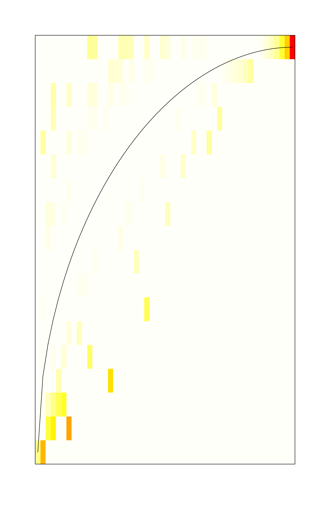
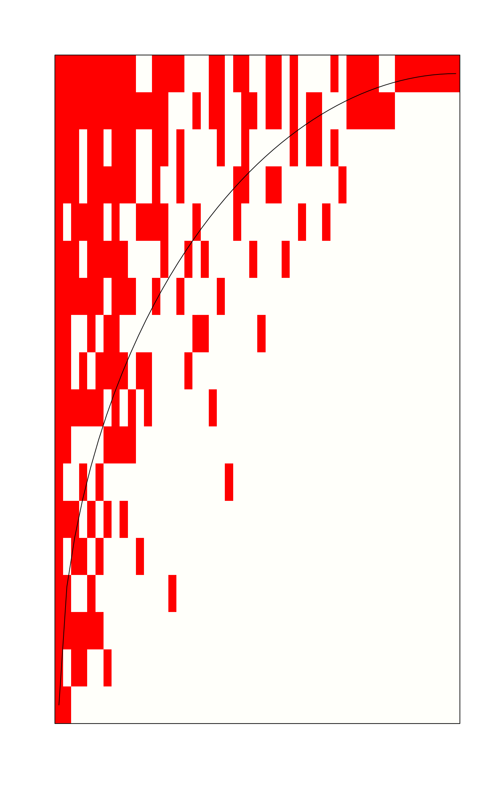

nestedtemp.RdPatches or local communities are regarded as nested if they all could be subsets of the same community. In general, species poor communities should be subsets of species rich communities, and rare species should only occur in species rich communities.
nestedchecker(comm)
nestedn0(comm)
nesteddisc(comm, niter = 200)
nestedtemp(comm, ...)
nestednodf(comm, order = TRUE, weighted = FALSE, wbinary = FALSE)
nestedbetasor(comm)
nestedbetajac(comm)
# S3 method for nestedtemp
plot(x, kind = c("temperature", "incidence"),
col=rev(heat.colors(100)), names = FALSE, ...)
# S3 method for nestednodf
plot(x, col = "red", names = FALSE, ...)Community data.
Number of iterations to reorder tied columns.
Result object for a plot.
Colour scheme for matrix temperatures.
The kind of plot produced.
Label columns and rows in the plot using names in comm.
If it is a logical vector of length 2, row and column labels are
returned accordingly.
Order rows and columns by frequencies.
Use species abundances as weights of interactions.
Modify original method so that binary data give the same result in weighted and and unweighted analysis.
Other arguments to functions.
The nestedness functions evaluate alternative indices of nestedness.
The functions are intended to be used together with Null model
communities and used as an argument in oecosimu to analyse
the non-randomness of results.
Function nestedchecker gives the number of checkerboard units,
or 2x2 submatrices where both species occur once but on different
sites (Stone & Roberts 1990).
Function nestedn0 implements
nestedness measure N0 which is the number of absences from the sites
which are richer than the most pauperate site species occurs
(Patterson & Atmar 1986).
Function nesteddisc implements discrepancy index which is the
number of ones that should be shifted to fill a row with ones in a
table arranged by species frequencies (Brualdi & Sanderson
1999). The original definition arranges species (columns) by their
frequencies, but did not have any method of handling tied
frequencies. The nesteddisc function tries to order tied
columns to minimize the discrepancy statistic but this is rather
slow, and with a large number of tied columns there is no guarantee
that the best ordering was found (argument niter gives the
maximum number of tried orders). In that case a warning of tied
columns will be issued.
Function nestedtemp finds the matrix temperature which is
defined as the sum of “surprises” in arranged matrix. In
arranged unsurprising matrix all species within proportion given by
matrix fill are in the upper left corner of the matrix, and the
surprise of the absence or presences is the diagonal distance from the
fill line (Atmar & Patterson 1993). Function tries to pack species and
sites to a low temperature (Rodríguez-Gironés
& Santamaria 2006), but this is an iterative procedure, and the
temperatures usually vary among runs. Function nestedtemp also
has a plot method which can display either incidences or
temperatures of the surprises. Matrix temperature was rather vaguely
described (Atmar & Patterson 1993), but
Rodríguez-Gironés & Santamaria (2006) are
more explicit and their description is used here. However, the results
probably differ from other implementations, and users should be
cautious in interpreting the results. The details of calculations are
explained in the vignette Design decisions and
implementation that you can read using functions
browseVignettes. Function
nestedness in the bipartite package is
a direct port of the BINMATNEST programme of
Rodríguez-Gironés & Santamaria (2006).
Function nestednodf implements a nestedness metric based on
overlap and decreasing fill (Almeida-Neto et al., 2008). Two basic
properties are required for a matrix to have the maximum degree of
nestedness according to this metric: (1) complete overlap of 1's
from right to left columns and from down to up rows, and (2)
decreasing marginal totals between all pairs of columns and all
pairs of rows. The nestedness statistic is evaluated separately for
columns (N columns) for rows (N rows) and combined for
the whole matrix (NODF). If you set order = FALSE,
the statistic is evaluated with the current matrix ordering allowing
tests of other meaningful hypothesis of matrix structure than
default ordering by row and column totals (breaking ties by total
abundances when weighted = TRUE) (see Almeida-Neto et
al. 2008). With weighted = TRUE, the function finds the
weighted version of the index (Almeida-Neto & Ulrich,
2011). However, this requires quantitative null models for adequate
testing. Almeida-Neto & Ulrich (2011) say that you have positive
nestedness if values in the first row/column are higher than in the
second. With this condition, weighted analysis of binary data will
always give zero nestedness. With argument wbinary = TRUE,
equality of rows/columns also indicates nestedness, and binary data
will give identical results in weighted and unweighted analysis.
However, this can also influence the results of weighted analysis so
that the results may differ from Almeida-Neto & Ulrich (2011).
Functions nestedbetasor and nestedbetajac find
multiple-site dissimilarities and decompose these into components of
turnover and nestedness following Baselga (2012); the pairwise
dissimilarities can be found with designdist. This can
be seen as a decomposition of beta diversity (see
betadiver). Function nestedbetasor uses
Sørensen dissimilarity and the turnover component is
Simpson dissimilarity (Baselga 2012), and nestedbetajac uses
analogous methods with the Jaccard index. The functions return a
vector of three items: turnover, nestedness and their sum which is
the multiple Sørensen or Jaccard dissimilarity. The
last one is the total beta diversity (Baselga 2012). The functions
will treat data as presence/absence (binary) and they can be used
with binary nullmodel. The overall dissimilarity is
constant in all nullmodels that fix species (column)
frequencies ("c0"), and all components are constant if row
columns are also fixed (e.g., model "quasiswap"), and the
functions are not meaningful with these null models.
The result returned by a nestedness function contains an item called
statistic, but the other components differ among functions. The
functions are constructed so that they can be handled by
oecosimu.
Almeida-Neto, M., Guimarães, P., Guimarães, P.R., Loyola, R.D. & Ulrich, W. (2008). A consistent metric for nestedness analysis in ecological systems: reconciling concept and measurement. Oikos 117, 1227--1239.
Almeida-Neto, M. & Ulrich, W. (2011). A straightforward computational approach for measuring nestedness using quantitative matrices. Env. Mod. Software 26, 173--178.
Atmar, W. & Patterson, B.D. (1993). The measurement of order and disorder in the distribution of species in fragmented habitat. Oecologia 96, 373--382.
Baselga, A. (2012). The relationship between species replacement, dissimilarity derived from nestedness, and nestedness. Global Ecol. Biogeogr. 21, 1223--1232.
Brualdi, R.A. & Sanderson, J.G. (1999). Nested species subsets, gaps, and discrepancy. Oecologia 119, 256--264.
Patterson, B.D. & Atmar, W. (1986). Nested subsets and the structure of insular mammalian faunas and archipelagos. Biol. J. Linnean Soc. 28, 65--82.
Rodríguez-Gironés, M.A. & Santamaria, L. (2006). A new algorithm to calculate the nestedness temperature of presence-absence matrices. J. Biogeogr. 33, 924--935.
Stone, L. & Roberts, A. (1990). The checkerboard score and species distributions. Oecologia 85, 74--79.
Wright, D.H., Patterson, B.D., Mikkelson, G.M., Cutler, A. & Atmar, W. (1998). A comparative analysis of nested subset patterns of species composition. Oecologia 113, 1--20.
In general, the functions should be used with oecosimu
which generates Null model communities to assess the non-randomness of
nestedness patterns.
data(sipoo)
## Matrix temperature
out <- nestedtemp(sipoo)
out
#> nestedness temperature: 10.23234
#> with matrix fill 0.2233333
plot(out)

plot(out, kind="incid")

## Use oecosimu to assess the non-randomness of checker board units
nestedchecker(sipoo)
#> Checkerboard Units : 2767
#> C-score (species mean): 2.258776
oecosimu(sipoo, nestedchecker, "quasiswap")
#> oecosimu object
#>
#> Call: oecosimu(comm = sipoo, nestfun = nestedchecker, method =
#> "quasiswap")
#>
#> nullmodel method ‘quasiswap’ with 99 simulations
#>
#> alternative hypothesis: statistic is less or greater than simulated values
#>
#> Checkerboard Units : 2767
#> C-score (species mean): 2.258776
#>
#> statistic SES mean 2.5% 50% 97.5% Pr(sim.)
#> checkerboards 2767 0.66774 2704.3 2551.2 2695.0 2919.2 0.41
## Another Null model and standardized checkerboard score
oecosimu(sipoo, nestedchecker, "r00", statistic = "C.score")
#> oecosimu object
#>
#> Call: oecosimu(comm = sipoo, nestfun = nestedchecker, method = "r00",
#> statistic = "C.score")
#>
#> nullmodel method ‘r00’ with 99 simulations
#>
#> alternative hypothesis: statistic is less or greater than simulated values
#>
#> Checkerboard Units : 2767
#> C-score (species mean): 2.258776
#>
#> statistic SES mean 2.5% 50% 97.5% Pr(sim.)
#> C.score 2.2588 -26.183 9.1901 8.6081 9.1682 9.7058 0.01 **
#> ---
#> Signif. codes: 0 ‘***’ 0.001 ‘**’ 0.01 ‘*’ 0.05 ‘.’ 0.1 ‘ ’ 1